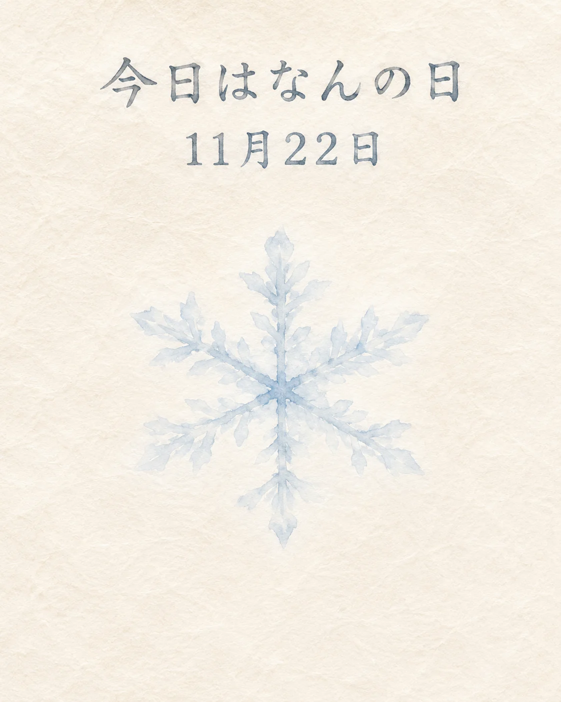

今日は、二十四節気の「小雪（しょうせつ）」です❄️
寒さが増し、雨が雪に変わり始めるころを表す季節の目印。2026年は、今日の16時23分に小雪を迎えます。
暦の言葉から冬の訪れを感じると、和食の楽しみ方にも自然と目が向きます。温かな出汁の香りや、器を手にしたときのぬくもり。味だけでなく、香りや温度にも季節を感じたいですね。
季節の味わいとともに、心ほどけるひとときをお過ごしください✨
季節の目印「小雪」と和食
二十四節気は、太陽の位置を基に一年の季節を表す目印です。小雪は太陽黄経240度となる節気で、2026年は11月22日16時23分（日本時間）に当たります。特定の地域でこの日に雪が降るという天気予報ではありません。
季節を大切にする和食では、食材に加えて香りや器、料理の温度も味わいの一部。この節目を、冬の食卓に思いを巡らせるきっかけとしてご紹介します。当日の料理や仕入れを確約する記事ではありません。
出典：国立天文台・令和8年暦要項、国立天文台・二十四節気の用語解説、まんのう天文台・2026年11月の天文現象（2026年11月22日確認）。